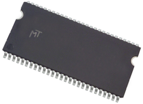

A picture of Richard W. Hamming as a young adult.
A picture of people that Richard worked with in the Manhattan Project, most notably Enrico Fermi at the bottom left.

Richard Hamming's work on error code detection and correction has been an incredible feat in computer science and has gone on to being developed later in the years for uses like data corruption from scratching a CD, DRAM memory chips and all the way to data transmitted to space probes